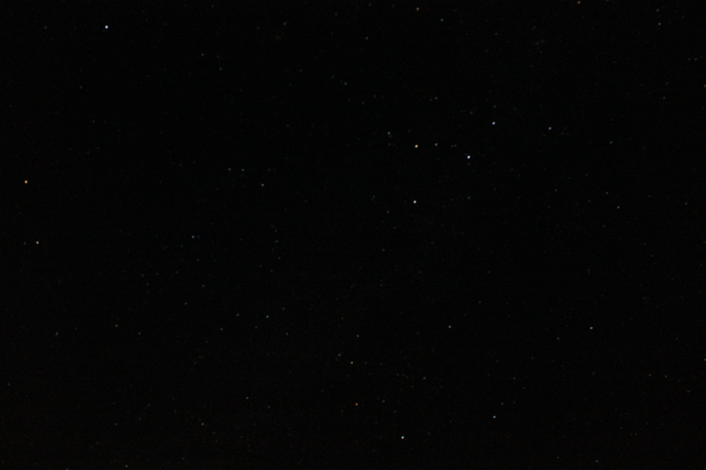
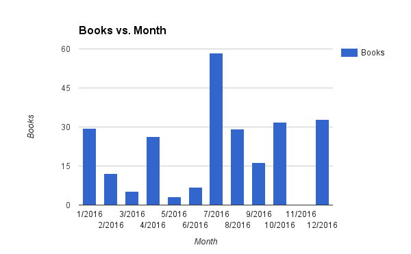
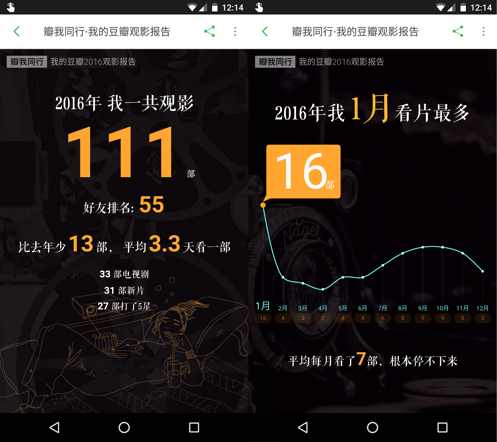
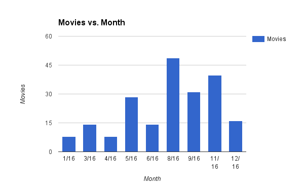
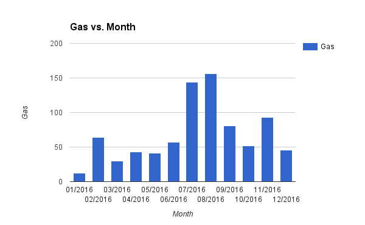

明天就能玩「2016年恍如昨日」的梗了！但是仔细想想，我并不是很敢仔细回忆这一年.. 😒
今年的 BGM 就挑 JJ 的《不为谁而做的歌》吧，不为谁而活的 2016。
我还是写这个的时候才知道原来 HTML5 中的 audio 音量只能在 JS 里设置 😓
定调
现在回望 2016，有很大一部分时间其实是处于非常迷茫的学术状态的，虽然现在相比于 2015 年年末有了很大进展，但依旧没有显现出一条特别清晰的路，😔，只能明年继续 🙏 吧！16年里给很多东西画上了句号，也开启了好些个新篇章。但这些好像都不太习惯和爸妈说，连带着和父母联系的频率也降低了..；也不咋合适发朋友圈，于是 SNS 渐渐地也发的少了很多。是不是不由自主地显得更加「遗世独立」了呢..
上一周我出去旅游了一圈。平安夜，从 Key West 回程的路上，我们开下高速，停靠在 state park 门口，关掉车灯，看漫天星河！！上一次看到这么多星星的时候我还在上小学，那天妈妈带着我一起回外婆家，我玩累了睡着了，直到夜里在三舅舅背我回家的路上醒来，抬起头看见了苏邦村的夜空，留下了直到今天还深刻的记忆。但即使是那次也没有在 Key West 这里看到的星星多。我真是第一次看到原来星星真的会眨眼，第一次看到仿佛真的有一条银河横亘其间，第一次看到星星在照片里是可以拍得有颜色的！多亏了带单反的小伙伴：

跳到车顶上躺下，我一边静静地看着星星一边扇手赶周围的蚊子.. 如果能重来，我要当李白，或许就能在这个时候留下一首千古名篇！仰望寥廓深邃的星空，庄严圣洁、自由宁静、壮丽光辉的星空，当时我的脑子里应该什么都没有想，我的内心非常平静，没有了前两天的患得患失。
所以我现在并不愿意把这一年的日记都翻一遍，就根据豆瓣记录、日常账单啥的简单捋一捋吧：
读书报告
就从📚开始吧。
截止到此时此刻，2016 年里一共在豆瓣上添加了 79 项读过记录。鉴于我每读完一本都会标记一下，这应该就基本是我这一年的课外书籍阅读量了吧，虽然里头可能会有零星几个补记录的标记。
根据账单显示，2016 年里一共买了 125 本，这些都是 amazon.cn 平台上的，因为其它平台都是用 RMB 结算的，只有 kindle 这里我可以刷我自己的卡。不过反正也没多少影响因为消费大头都在这里了。
数据显示，2016 年买书总花费是 251.68 刀，平均单价为 2.03 刀。月度支出如下图所示，看的出来是一波一波的冲动消费..

相比之下，2015 年的买书总花费是 173.52 刀，同比增长了 45.04% （被比率吓到了..）。而 2015 年在豆瓣上新增的图书标记项是 58 项，16 年同比增长了 36.20%。显然，在两项数据都有增长的情况下，买的比读完的更多了.. 这种趋势下去，肯定会有一些书是近似于打入冷宫永远都不会翻开的了吧 = =
这里只和 2015 年的数据进行了对比，其实从开始记账以来的数据应该都还在，但是我懒得把前几年的数据翻出来了，因为账单里的分类我改动过..
现在搜那种「有点有兴趣，又不是特别想马上看」的书的时候还有点怕有电子版.. 如果没有的话就可以光明正大地存着不买了！😓 这点上微信读书这类的 app 就做的好多了！可以先加入书架，看几页之后再买。在暑假小结里我写过，现在除了 Kindle 之外，我也在用微信读书的 app 在听书。它的 Android 版提供了听书的功能，效果还挺棒的。听书的习惯源于今年上半年陆陆续续听完的《把时间当做朋友》和李笑来老师的开源新书《新生·七年就是一辈子》，相见恨晚！到目前为止我发现的最适合在上边听的书籍就是《鱼羊野史》这一类的上下文无关书籍了，随时开始继续听都不影响.. 我也听了好几本文学小说，只是到后边会忘了之前说过什么，因为很容易就走神了呀！
年中的时候我也加过一两个读书的微信群，有那种每周读一本、每周解散重新加一次群的，也有高中同学小姐姐建的亲友读书群。不过基本都是潜水，还是按照自己的节奏在走，毕竟已经有很多买好了的书在等排位了啊..！
有几本印象比较深刻的，我想按照列一列：
《手机里的男朋友》，这个严格意义上是 12/31/2015 那天看完的.. 不过的确很喜欢就一并列在这里了。我对这一类的开脑洞有意思的短篇爱不释手，对亲王的文字也是一样。😄
《睡不着：Tango一日一画》，这是微博上我非常喜欢的脑洞博主画的合集，搜到有电子版后直接就入了。对有意思的脑洞完全无法招架呀 😂。类似的小绘本还有《你今天真好看》和《我可以咬一口吗》，感觉拿来当礼物会很棒的吧！
继续说脑洞，《人类简史：从动物到上帝》也可以算一本，我还写了一篇读书笔记。虽然当时我并没有觉得这本有风评的那么那么惊艳。反倒是作者的新书《未来简史：从智人到神人》有点吸引到我。新书的中文版好像还没上市，我看同人于野老师的微博专栏里的解读感觉振聋发聩，等出电子版了我一定买！还有类似的几本同样从非常宏大的角度看人类的书，虽然风评很好但是我还没有机会看就不提了，17年能看完吗..
还有一类脑洞就是科幻小说了，比如说《你一生的故事：特德·姜科幻小说集》，特别是里头的《地狱是上帝不在的地方》和《72个字母》这两篇！这个是因为电影《降临》而去看的。
说脑洞的话其实不能不提到网络小说，它们听起来很上不得台面，可以毫不犹豫地说 99.9% 的网络小说确实是上不得台面的，它们最多可以被归为「仅仅是有趣而已」的书。不过在这么大的基数下，总能冒出一些让我爱不释手的来的。去年看完《罗马人的故事》之后找到了一本穿越回到那个时代的《奥古斯都之路》，后来一看原来亲王也推荐过 😂。今年有看到一本《奥术神座》，写的是用科学解释魔法，这类玩梗的题材我都很喜欢（现在记起它是因为作者的新书），然后一看亲王也推荐过 😂😂😂。再一搜知乎上甚至都有一个亲王推荐过哪些小说的问题…. 另一本我今年必须提一下的惊喜是《孺子帝》，以及作者之前的《死人经》，找一本所有角色都有智商的书真的好难。其实亲王也推荐过后一本书的…. 所以果真是亲王喜欢的书我基本都会喜欢呀！😍 不过讲真，网络小说的输入/产出比是在是太低太低了，所以也仅仅只能作为一个消遣罢了。
- 另一类今年我读的很开心的书是能够「补全我的历史地图」的那些，比如《零年：1945 - 现代世界诞生的时刻》，里头介绍了二战之后的一些整肃与复苏过程。这是一个长久的过程，书中提到的战后心态的解放、清算、文化宣传等等都是平时历史书上不会提到的阴影部分。但是读起来就会觉得「对啊，确实应该会有这么一个过程呀！」，这是一种补齐一块拼图的快感！《你一定爱读的极简欧洲史》也是这类的书，帮你捋一条线索出来，超爽。
- 还有一个想要提一下的是《牛津通识读本》系列，比如说《Logic》，我原本以为好歹学过各种 xxx program logic 了，没想到还是有学到了新东西👍。当然还有一个不能否认的目的是：这类小册子都很短，输入输出比会很高，也比较容易多标记.. 😶 其实我是个不怎么做的到慎独的人.. 所以需要有意识地引入外在社交压力，逼迫、引导自己做些理智上认为是正确的事情。
不得不承认，现在的我看书越来越挑剔（功利？）了——要嘛能有些产出、要嘛能有浸入式的阅读体验，所以我对虚构类图书的要求越来越高。16 年有一本非常喜欢的《献给阿尔吉侬的花束》，它其实也可以归在科幻类别下边。我看完特别心疼，那种「得到了却又不得不看着它一点点离去」的感觉特别虐心。这个有点像是年老之后罹患阿尔茨海默的场景，因为爷爷奶奶今年开始有了一点点这方面的征兆，想到这些我就更忧伤了。另外一本印象中获得了浸入式体验的书是《24个比利》，看完我就去补了《致命ID》😂。
就写到这里吧，其实还有想到几本情感类的工具书，就不列出来贻笑大方了 😄。
观影报告
直接上豆瓣的图好了：（读书怎么就没有这样的报告？？15 年好像就没有？）

左图里「好友排名：55」的数据应该是由于我专门关注了一大批豆瓣上「大V」，都是看了很多书或者看了很多电影、并且与我很比较多共同喜好的用户。当时关注他们就是为了在条目的好友评分里获得更加准确的评估，忽略潜在水军的影响..
这些是截止到目前为止我在 2016 年里新标记的电影条目。鉴于我每看完一部就会标记一下，这应该就基本是我这一年的观影量了吧，虽然里头也包括了一些电视剧、综艺节目、动漫。官方数据显示 2016 年比 2015 年少了 13部.. 鉴于我还补了一些小时候看过的电视剧的标记，所以 2016 年比 2015 年少看了很多的电影。
从右边的图可以看出，除去 1 月之后，明显下半年看的电影比上半年多。这是因为上半年觉得可能不太合适自己一个人去电影院看那就干脆不去了.. 而下半年后来就不管这个了 😓
其实从具体花费上可以看的更加明显。2016 年里用于电影的花费为 208.42 刀而 2015 年的总支出是 391.2 刀.. 16 年的月度支出如下图所示：

对比之前的每月标记数可以看出：2016 年 1 月份基本是宅在家里补番的…… 😓😓😓
在这么些电影、剧集中，我最喜欢的是《疯狂动物城》和《奇葩说》！！真的是超喜欢超喜欢！疯狂动物城可能每个人被戳中的点可能不一样，Judy 来到大城市给家里打电话的场景现在还在我的脑海里😔。奇葩说我是今年才把全部三季补完的，又是相见恨晚的一个系列！就等着第四季了！
8月初搬家无家可归旅游期间，我还去体验了一把 drive-in theater, 9月份趁着去芝加哥跑半马的体验了一把 dine-in theater 都挺有意思的 😄。
嗯，关于电影其它我就没有什么好聊的了..
其它日常报告
借着统计书影支出的机会，我也看了下每个月的油费和盒饭支出，其它的账目好像都没什么意思了吧。
月度油费支出如下图：

可以看出，抛开暑假的话上半年的油费比下半年会少一些，这应该是因为暑假搬家了！从离学校 2.7 麦的地方搬到了 5.2 麦左右的地方.. 而暑假那高到离谱的油费支出是因为去芝加哥看了几场球，以及去机场接了几次人，还有就是 8 月初出去「流浪」旅游了一周。
月度盒饭支出如下图：
16 年吃盒饭已经非常频繁了，因为自己做真的很花时间.. 而且也自己做也有点吃腻了.. 而且完全没有盒饭好吃！图中把每月盒饭次数、盒饭花费都显示出来了。数据统计显示，全年平均每个月吃盒饭 10.08 次，不过显然上下半年区别蛮大的，上半年平均每月 6.83 次，下半年平均每月 13.33 次.. 下半年吃盒饭吃的多多了！我想了想，噢确实 make sense.. 假期一般会吃的比较少，不过我已经解释不出为啥年初2月份的时候吃了那么多盒饭然后3-5月就少很多了..
□
看图写话就写到这里吧，祝所有人好！🙏